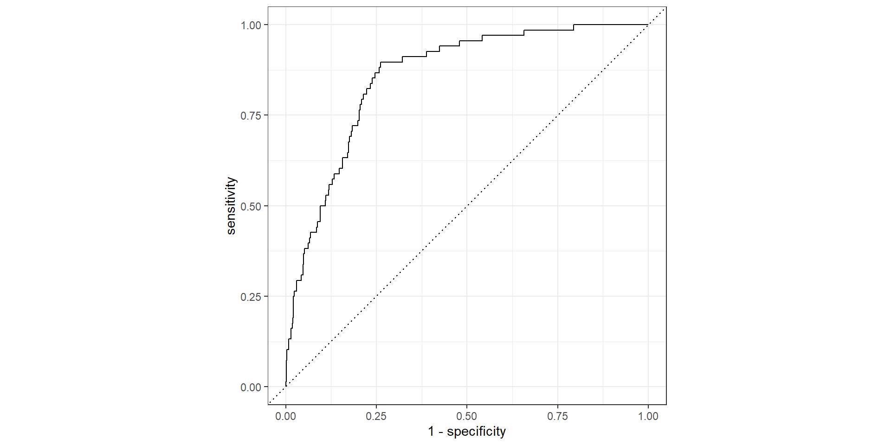

Data: Set of emails and we know if each email is spam/not and other features
Use logistic regression to predict the probability that an incoming email is spam
Use model selection to pick the model with the best predictive performance
Building a model to predict the probability that an email is spam is only half of the battle! We also need a decision rule about which emails get flagged as spam (e.g. what probability should we use as out cutoff?)
A simple approach: choose a single threshold probability and any email that exceeds that probability is flagged as spam
# A tibble: 22 x 5
term estimate std.error statistic p.value
<chr> <dbl> <dbl> <dbl> <dbl>
1 (Intercept) -9.09e+1 9.80e+3 -0.00928 9.93e- 1
2 to_multiple1 -2.68e+0 3.27e-1 -8.21 2.25e-16
3 from1 -2.19e+1 9.80e+3 -0.00224 9.98e- 1
4 cc 1.88e-2 2.20e-2 0.855 3.93e- 1
5 sent_email1 -2.07e+1 3.87e+2 -0.0536 9.57e- 1
6 time 8.48e-8 2.85e-8 2.98 2.92e- 3
7 image -1.78e+0 5.95e-1 -3.00 2.73e- 3
8 attach 7.35e-1 1.44e-1 5.09 3.61e- 7
9 dollar -6.85e-2 2.64e-2 -2.59 9.64e- 3
10 winneryes 2.07e+0 3.65e-1 5.67 1.41e- 8
11 inherit 3.15e-1 1.56e-1 2.02 4.32e- 2
12 viagra 2.84e+0 2.22e+3 0.00128 9.99e- 1
13 password -8.54e-1 2.97e-1 -2.88 4.03e- 3
14 num_char 5.06e-2 2.38e-2 2.13 3.35e- 2
15 line_breaks -5.49e-3 1.35e-3 -4.06 4.91e- 5
16 format1 -6.14e-1 1.49e-1 -4.14 3.53e- 5
17 re_subj1 -1.64e+0 3.86e-1 -4.25 2.16e- 5
18 exclaim_subj 1.42e-1 2.43e-1 0.585 5.58e- 1
19 urgent_subj1 3.88e+0 1.32e+0 2.95 3.18e- 3
20 exclaim_mess 1.08e-2 1.81e-3 5.98 2.23e- 9
21 numbersmall -1.19e+0 1.54e-1 -7.74 9.62e-15
22 numberbig -2.95e-1 2.20e-1 -1.34 1.79e- 1Several steps to create a useful model: parameter estimation, model selection, performance assessment, etc.
Doing all of this on the entire data we have available can lead to overfitting
Allocate specific subsets of data for different tasks, as opposed to allocating the largest possible amount to the model parameter estimation only (which is what we’ve done so far)
Rows: 3,136
Columns: 21
$ spam <fct> 0, 1, 0, 1, 0, 0, 0, 0, 0, 0, 1, 0, 0, 0, 0, 0, 0, 0, 0, 0, 0, 0, 0, 0, 0, 0,~
$ to_multiple <fct> 0, 0, 0, 0, 1, 1, 0, 0, 0, 0, 0, 0, 0, 1, 0, 0, 0, 0, 0, 1, 0, 0, 0, 0, 0, 0,~
$ from <fct> 1, 1, 1, 1, 1, 1, 1, 1, 1, 1, 1, 1, 1, 1, 1, 1, 1, 1, 1, 1, 1, 1, 1, 1, 1, 1,~
$ cc <int> 2, 0, 0, 0, 0, 0, 0, 0, 0, 0, 0, 0, 0, 35, 0, 0, 0, 0, 0, 0, 0, 0, 9, 0, 1, 0~
$ sent_email <fct> 1, 0, 1, 0, 0, 0, 0, 0, 0, 0, 0, 0, 0, 0, 1, 0, 0, 0, 0, 1, 0, 0, 1, 0, 1, 0,~
$ time <dttm> 2012-01-25 16:46:55, 2012-01-02 23:28:28, 2012-02-04 10:31:11, 2012-03-19 08~
$ image <dbl> 0, 0, 0, 0, 0, 1, 0, 0, 0, 0, 0, 0, 0, 0, 0, 0, 0, 0, 0, 0, 0, 0, 0, 0, 0, 0,~
$ attach <dbl> 0, 0, 0, 0, 0, 1, 0, 0, 0, 0, 0, 0, 0, 0, 0, 0, 0, 0, 0, 0, 0, 0, 0, 0, 0, 0,~
$ dollar <dbl> 10, 0, 0, 0, 0, 0, 13, 0, 0, 0, 2, 0, 0, 0, 14, 0, 0, 0, 0, 0, 0, 0, 2, 0, 0,~
$ winner <fct> no, no, no, no, no, no, no, yes, no, no, no, no, no, no, no, no, no, no, no, ~
$ inherit <dbl> 0, 0, 0, 0, 0, 1, 0, 0, 0, 0, 0, 0, 0, 0, 0, 0, 0, 0, 0, 0, 0, 0, 0, 0, 0, 0,~
$ viagra <dbl> 0, 0, 0, 0, 0, 0, 0, 0, 0, 0, 0, 0, 0, 0, 0, 0, 0, 0, 0, 0, 0, 0, 0, 0, 0, 0,~
$ password <dbl> 0, 0, 0, 0, 0, 0, 0, 0, 0, 0, 0, 0, 0, 0, 0, 0, 3, 0, 0, 0, 0, 0, 0, 0, 0, 0,~
$ num_char <dbl> 23.308, 1.162, 4.732, 42.238, 1.228, 25.599, 16.764, 10.731, 3.778, 27.182, 2~
$ line_breaks <int> 477, 2, 127, 712, 30, 674, 367, 226, 98, 671, 46, 192, 67, 85, 655, 18, 167, ~
$ format <fct> 1, 0, 1, 1, 0, 1, 1, 1, 1, 1, 0, 1, 0, 0, 1, 1, 1, 1, 1, 1, 1, 1, 1, 1, 1, 1,~
$ re_subj <fct> 1, 0, 1, 0, 0, 0, 0, 0, 0, 0, 0, 0, 1, 0, 1, 0, 0, 0, 1, 0, 0, 0, 1, 0, 1, 0,~
$ exclaim_subj <dbl> 0, 0, 0, 0, 0, 0, 1, 0, 0, 0, 1, 0, 0, 0, 0, 0, 0, 0, 1, 0, 0, 0, 0, 0, 0, 0,~
$ urgent_subj <fct> 0, 0, 0, 0, 0, 0, 0, 0, 0, 0, 0, 0, 0, 0, 0, 0, 0, 0, 0, 0, 0, 0, 0, 0, 0, 0,~
$ exclaim_mess <dbl> 12, 0, 2, 2, 2, 31, 2, 0, 0, 1, 0, 1, 2, 0, 2, 0, 11, 1, 4, 0, 1, 1, 3, 2, 0,~
$ number <fct> small, none, big, big, small, small, small, small, small, small, small, small~Rows: 785
Columns: 21
$ spam <fct> 0, 0, 0, 0, 0, 0, 0, 0, 0, 0, 0, 0, 0, 0, 0, 0, 0, 0, 0, 0, 0, 0, 0, 0, 0, 0,~
$ to_multiple <fct> 1, 0, 0, 0, 0, 0, 0, 0, 0, 0, 1, 0, 0, 1, 0, 0, 0, 0, 0, 0, 0, 0, 1, 0, 0, 0,~
$ from <fct> 1, 1, 1, 1, 1, 1, 1, 1, 1, 1, 1, 1, 1, 1, 1, 1, 1, 1, 1, 1, 1, 1, 1, 1, 1, 1,~
$ cc <int> 0, 1, 0, 1, 4, 0, 0, 0, 0, 0, 0, 0, 0, 0, 0, 0, 0, 3, 0, 0, 0, 0, 4, 0, 0, 0,~
$ sent_email <fct> 1, 1, 0, 0, 0, 0, 0, 0, 0, 0, 0, 0, 0, 0, 0, 0, 0, 1, 0, 0, 1, 0, 0, 1, 0, 0,~
$ time <dttm> 2012-01-01 11:55:06, 2012-01-01 13:38:32, 2012-01-01 23:42:16, 2012-01-02 09~
$ image <dbl> 0, 0, 0, 0, 0, 0, 0, 0, 0, 0, 0, 0, 0, 0, 0, 0, 1, 0, 0, 0, 0, 0, 0, 0, 0, 0,~
$ attach <dbl> 0, 0, 0, 0, 0, 0, 0, 0, 0, 0, 0, 0, 0, 1, 0, 0, 1, 0, 0, 1, 1, 0, 0, 0, 0, 0,~
$ dollar <dbl> 0, 0, 5, 0, 0, 0, 0, 5, 4, 0, 0, 0, 21, 0, 0, 2, 9, 0, 0, 0, 0, 20, 0, 0, 0, ~
$ winner <fct> no, no, no, no, no, no, no, no, no, no, no, no, no, no, no, no, no, no, no, n~
$ inherit <dbl> 0, 0, 0, 0, 0, 0, 0, 0, 1, 0, 0, 0, 0, 0, 0, 0, 0, 0, 0, 0, 0, 0, 0, 0, 0, 0,~
$ viagra <dbl> 0, 0, 0, 0, 0, 0, 0, 0, 0, 0, 0, 0, 0, 0, 0, 0, 0, 0, 0, 0, 0, 0, 0, 0, 0, 0,~
$ password <dbl> 0, 0, 1, 0, 0, 0, 0, 0, 0, 1, 0, 0, 0, 0, 0, 0, 0, 0, 2, 0, 0, 0, 0, 0, 0, 0,~
$ num_char <dbl> 4.837, 15.075, 18.037, 45.842, 11.438, 1.482, 14.431, 0.978, 7.792, 0.978, 2.~
$ line_breaks <int> 193, 354, 345, 881, 125, 24, 296, 13, 192, 14, 32, 30, 557, 159, 81, 173, 151~
$ format <fct> 1, 1, 1, 1, 0, 1, 1, 0, 1, 0, 0, 0, 1, 1, 1, 1, 1, 1, 1, 1, 0, 1, 0, 1, 1, 1,~
$ re_subj <fct> 0, 1, 0, 1, 1, 0, 0, 0, 0, 0, 1, 0, 0, 0, 1, 0, 0, 1, 0, 0, 0, 0, 1, 1, 0, 0,~
$ exclaim_subj <dbl> 0, 0, 1, 0, 0, 0, 0, 0, 0, 0, 0, 0, 0, 0, 0, 0, 0, 0, 0, 0, 0, 0, 0, 0, 0, 0,~
$ urgent_subj <fct> 0, 0, 0, 0, 0, 0, 0, 0, 0, 0, 0, 0, 0, 0, 0, 0, 0, 0, 0, 0, 0, 0, 0, 0, 0, 0,~
$ exclaim_mess <dbl> 1, 10, 20, 5, 2, 0, 0, 0, 6, 0, 0, 1, 3, 0, 4, 0, 1, 0, 139, 2, 0, 18, 1, 8, ~
$ number <fct> big, small, small, big, small, none, small, small, small, small, small, none,~from and sent_emailfrom: Whether the message was listed as from anyone (this is usually set by default for regular outgoing email)# A tibble: 3 x 3
spam from n
<fct> <fct> <int>
1 0 1 2837
2 1 0 3
3 1 1 296sent_email: Indicator for whether the sender had been sent an email in the last 30 days# A tibble: 3 x 3
spam sent_email n
<fct> <fct> <int>
1 0 0 1972
2 0 1 865
3 1 0 299
-- Variable type: numeric --------------------------------------------------------------------------
skim_variable spam n_missing complete_rate mean sd p0 p25 p50 p75 p100
1 cc 0 0 1 0.393 2.62 0 0 0 0 68
2 cc 1 0 1 0.388 3.25 0 0 0 0 50
3 image 0 0 1 0.0536 0.503 0 0 0 0 20
4 image 1 0 1 0.00334 0.0578 0 0 0 0 1
5 attach 0 0 1 0.124 0.775 0 0 0 0 21
6 attach 1 0 1 0.227 0.620 0 0 0 0 2
7 dollar 0 0 1 1.56 5.33 0 0 0 0 64
8 dollar 1 0 1 0.779 3.01 0 0 0 0 36
9 inherit 0 0 1 0.0352 0.216 0 0 0 0 6
10 inherit 1 0 1 0.0702 0.554 0 0 0 0 9
11 viagra 0 0 1 0 0 0 0 0 0 0
12 viagra 1 0 1 0.0268 0.463 0 0 0 0 8
13 password 0 0 1 0.112 0.938 0 0 0 0 22
14 password 1 0 1 0.0201 0.182 0 0 0 0 2
15 num_char 0 0 1 11.4 14.9 0.003 1.97 6.83 15.7 190.
16 num_char 1 0 1 5.63 15.7 0.001 0.468 0.999 3.55 174.
17 line_breaks 0 0 1 247. 326. 2 42 138 318 4022
18 line_breaks 1 0 1 108. 321. 1 14 23 66.5 3729
19 exclaim_subj 0 0 1 0.0783 0.269 0 0 0 0 1
20 exclaim_subj 1 0 1 0.0769 0.267 0 0 0 0 1
21 exclaim_mess 0 0 1 6.68 50.2 0 0 1 5 1236
22 exclaim_mess 1 0 1 8.75 88.4 0 0 0 1 1209 $numeric
-- Variable type: numeric --------------------------------------------------------------------------
skim_variable spam n_missing complete_rate mean sd p0 p25 p50 p75 p100
1 cc 0 0 1 0.393 2.62 0 0 0 0 68
2 cc 1 0 1 0.388 3.25 0 0 0 0 50
3 image 0 0 1 0.0536 0.503 0 0 0 0 20
4 image 1 0 1 0.00334 0.0578 0 0 0 0 1
5 attach 0 0 1 0.124 0.775 0 0 0 0 21
6 attach 1 0 1 0.227 0.620 0 0 0 0 2
7 dollar 0 0 1 1.56 5.33 0 0 0 0 64
8 dollar 1 0 1 0.779 3.01 0 0 0 0 36
9 inherit 0 0 1 0.0352 0.216 0 0 0 0 6
10 inherit 1 0 1 0.0702 0.554 0 0 0 0 9
# ... with 12 more rowsparsnip model object
Call: stats::glm(formula = spam ~ . - from - sent_email - viagra, family = stats::binomial,
data = data)
Coefficients:
(Intercept) to_multiple1 cc time image attach dollar
-9.867e+01 -2.505e+00 1.944e-02 7.396e-08 -2.854e+00 5.070e-01 -6.440e-02
winneryes inherit password num_char line_breaks format1 re_subj1
2.170e+00 4.499e-01 -7.065e-01 5.870e-02 -5.420e-03 -9.017e-01 -2.995e+00
exclaim_subj urgent_subj1 exclaim_mess numbersmall numberbig
1.002e-01 3.572e+00 1.009e-02 -8.518e-01 -1.329e-01
Degrees of Freedom: 3135 Total (i.e. Null); 3117 Residual
Null Deviance: 1974
Residual Deviance: 1447 AIC: 1485# A tibble: 785 x 1
.pred_class
<fct>
1 0
2 0
3 0
4 0
5 0
6 0
7 0
8 0
9 0
10 0
# ... with 775 more rows# A tibble: 785 x 4
.pred_0 .pred_1 spam time
<dbl> <dbl> <fct> <dttm>
1 0.993 0.00709 0 2012-01-01 11:55:06
2 0.998 0.00181 0 2012-01-01 13:38:32
3 0.981 0.0191 0 2012-01-01 23:42:16
4 0.999 0.00124 0 2012-01-02 09:12:51
5 0.988 0.0121 0 2012-01-02 10:45:36
6 0.830 0.170 0 2012-01-02 15:55:03
7 0.959 0.0410 0 2012-01-02 19:07:17
8 0.861 0.139 0 2012-01-02 23:41:35
9 0.938 0.0617 0 2012-01-03 10:02:35
10 0.902 0.0983 0 2012-01-03 05:14:51
# ... with 775 more rows# A tibble: 785 x 4
.pred_0 .pred_1 spam time
<dbl> <dbl> <fct> <dttm>
1 0.0972 0.903 1 2012-02-13 06:15:00
2 0.167 0.833 0 2012-01-27 14:05:06
3 0.175 0.825 1 2012-02-29 23:40:27
4 0.267 0.733 1 2012-03-17 05:13:27
5 0.317 0.683 1 2012-03-21 07:33:12
6 0.374 0.626 1 2012-02-08 02:00:05
7 0.386 0.614 0 2012-01-30 08:20:29
8 0.403 0.597 1 2012-01-07 10:11:49
9 0.462 0.538 1 2012-03-06 05:46:20
10 0.463 0.537 0 2012-02-17 16:54:16
# ... with 775 more rowsReceiver operating characteristic (ROC) curve+ which plot true positive rate vs. false positive rate (1 - specificity)

Find the area under the curve:
# A tibble: 1 x 3
.metric .estimator .estimate
<chr> <chr> <dbl>
1 roc_auc binary 0.857